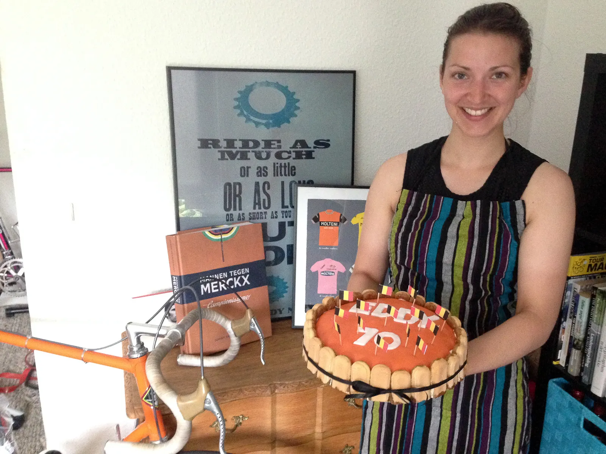

DGI Holdløb Hedensted: Squadra Molteni fejrede Eddy Merckx

Squadra Molteni fejrer Eddy Merckx ved dagens DGI Holdløb i Hedensted. Torta mama havde bagt hjemmelavet kage for at fejre den store rytters 70 års fødselsdag.
Onsdag aften var det orange eksprestog igen på farten. Denne gang til holdløbet i Hedensted, hvor holdet var opsatte på levere varen i anledningen af Eddy Merckx’s 70 års fødselsdag.
Holdets soigneur og torta mama havde endnu en gang været i køkkenet, og ved målstregen ventede en helt speciel fødselsdagslagkage.
DGI Holdløb Hedensted blev kørt til perfektion
Om det var respekten for mesterens årsdag, eller udsigten til lagkage vides ikke med sikkerhed, men holdet kørte en nærmest perfekt holdtidskørsel.
Kun en uheld kunne sætte en kæp i hjulet for den nu efterhånden meget velsmurte maskine.
Tre gange skulle den 13 kilometer lange og pandekageflade rundstrækning tilbagelægges.
Op til starten var vejret præget af kraftig regn og blæst, men løbet blev kørt i tørvejr, men på drivvåde veje.
Vand, sand og mudder sprøjtede op på de orange uldtrøjer.
Squadra Molteni blev sendt afsted som næstsidste hold, og kaptajn Per Sandahl fik tropperne sat sikkert i gang.
De første par kilometer blev brugt på at vænne sig til forholdene, men samarbejdet fungerede perfekt.
Kaptajnen styrede holdet med sikker hånd
Speederen blev roligt men sikkert presset i bund. Hele tiden under kyndig ledelse af kaptajnen.
– For en ny rytter som mig, er det er en fornøjelse at have en erfaren herre som Per på holdet.
Hans føringer er perfekt afstemte til gruppens niveau, og så er han hele tiden opmærksom på at hjælpe os andre med at placere os rigtigt, siger holdets unge neo pro, Kasper Sørensen.
Holdet bestod desuden af Eigil Leegaard, Grane Maaløe og Thure Kjær.
Alle indgik i en meget homogen holdtidskørsel, hvor der blev begået meget få fejl.
Eigil “Delagdo” Leegaard, havde desværre været lidt for hurtigt med hurtigbespændingen af baghjulet, og det førte til lidt mekaniske problemer på anden omgang.
Det kostede lige under to minutter.
Tidtagning uden chip.
Undskyldningen fra officials var, at Peter Meinert var taget til udlandet. Om han har taget alle tidtagningschipene med, var der ingen forlydninger om – så tidtagningen blev på øjemål.
Squadra Molteni tilbagelagde de 39 kilometer på lige under 1 timer og 5 minutter.
Placeringen taler vi ikke om, men det var ikke en sidsteplads. Vurderingen fra kaptajn Per Sandahl var dog at vi havde vundet, havde vi ikke været forstyrret af uheld.
Lagkagen var under alle omstændigheder velfortjent, og den smagte fantastisk.

Tillykke med fødselsdagen, Eddy!